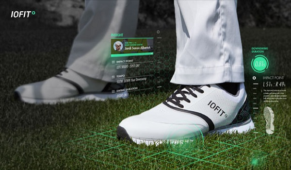
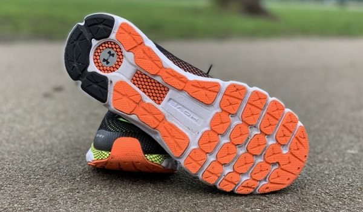
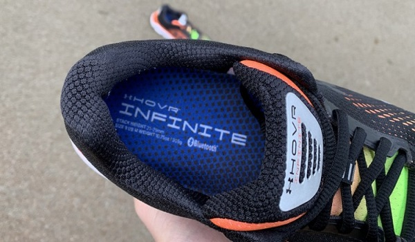
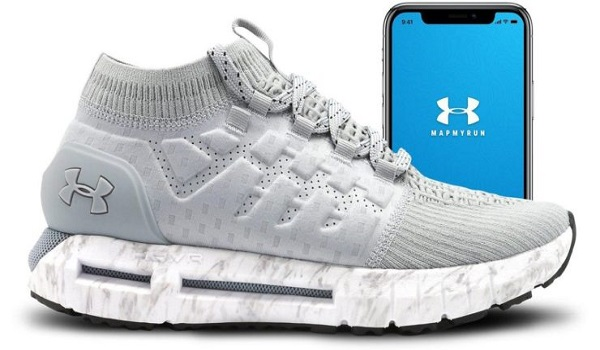

Рады представить вашему вниманию вторые баскетбольные кроссовки с адаптивной системой автоматической фиксации стопы. Футуристичный дизайн, цепкая подмётка и амортизирующий баллон сочетаются в паре. Новичок «Мемфис Гриззлис» представил новинку на матче всех звёзд, а сегодня протестировать кроссовки с технологией авто-фиксации появилась и у тебя. В отличие от первой версии BB 2.0 стали на 100 грамм тяжелее (кроссовок в размере 9us весит 555 грамм). Амортизация во второй модели значительно лучше благодаря интеграции большого баллона. Эластичный материал не доставит атлету дискомфорта при надевании.
Основная часть кроссовка выполнена из плетёного синтетического материала TPU Knit в передней части и эластичного внутри «воротничка». Литой задник изготовлен из плотного каучука (TPU). полностью изготовлена из пеноматериала Cushlon. С внешней части «Воротничок» кроссовка выполнен из кожи для большей износостойкости. Язычок выполнен из светоотражающего материала 3M и оснащён кожаной петлёй для удобства надевания. Достаточное количество набивочного материала (поролон) в области пятки. Плотные синтетические материалы основной части кроссовка призваны улучшить фиксацию стопы в колодке, однако из-за этого ухудшается терморегуляция стопы. Рисунок протектора представляет собой классическую «ёлочку» (мелкий зигзагообразный узор). BB 2 обеспечивают отличное сцепление на всех видах покрытий баскетбольных кортов.
Стопа комфортно и безопасно фиксируется в кроссовке благодаря системе Adapt 2.0. Для регулировки натяжения фиксирующих нитей необходимо нажать на соответствующую кнопку (+/-) на механизме, расположенном в середине подошвы. Широкая плоская подошва с выступающим наружу аутригером гарантирует отличную устойчивость кроссовка. Главным отличием второй версии от первых BB является улучшенная амортизация, а если точнее – большой баллон в передней части стопы. Для снижения ударных нагрузок и возврата затрачиваемой атлетом энергии применяется пеноматериал Cushlon - из негоизготовлена мидсоль.
Петля на заднике и кожаный ремешок на язычке призваны облегчить процесс надевания пары. С помощью системы Adapt 2 стопа надёжно и безопасно фиксируется в кроссовке. Большое количество набивочного материала исключает любые дискомфортные ощущения. Комбинация амортизирующего пеноматериала Cushlon и баллона минимизирует ударные нагрузки, а также обеспечивает эталонную отзывчивость кроссовок на движения атлета. Отличная тракция и низкий боковой профиль обеспечивают безопасную свободу движений, а баллон помогает усилить отзывчивость кроссовка на движения спортсмена.
 
 